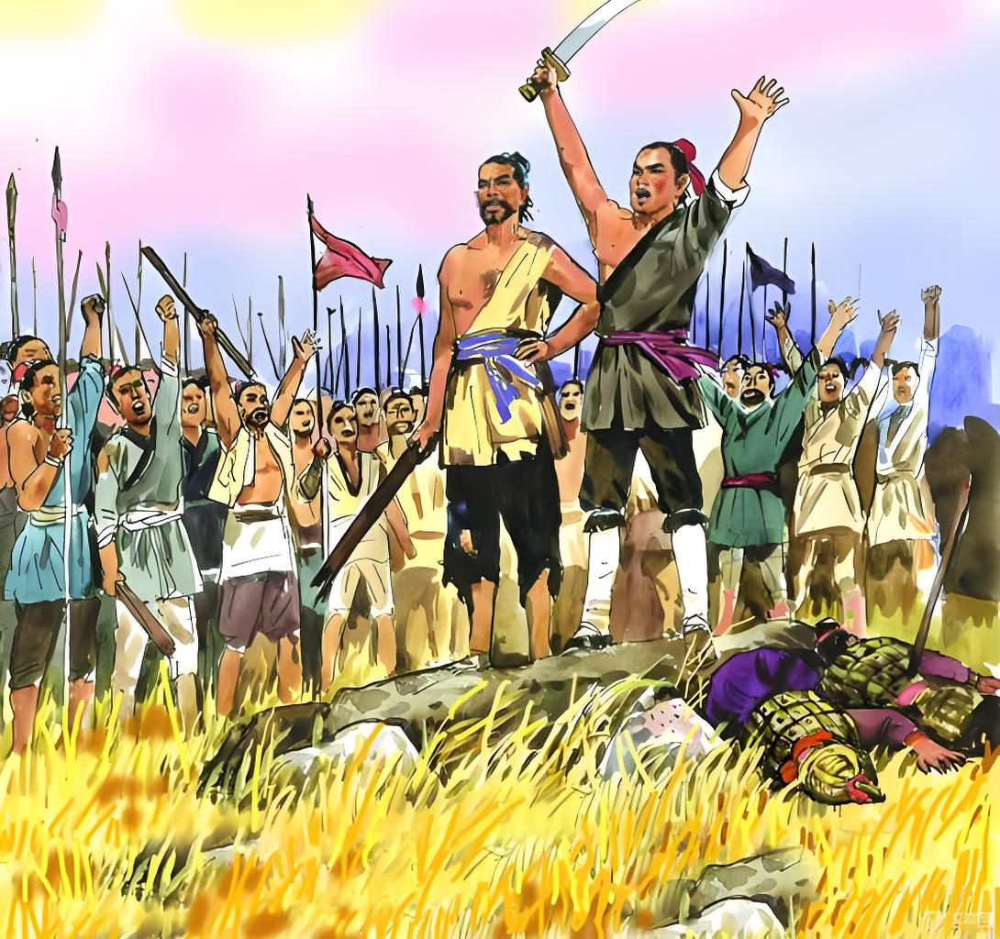

The End of a Short-Lived Empire
Qin's harsh rule (heavy taxes, forced labor, cruel laws) caused rebellions. After Qin Shi Huang's death, the Dazexiang Uprising in 209 BCE led to Qin's collapse in 207 BCE.

Historical painting of Qin's peasant uprising
Prince 1120 QingrenSJNA